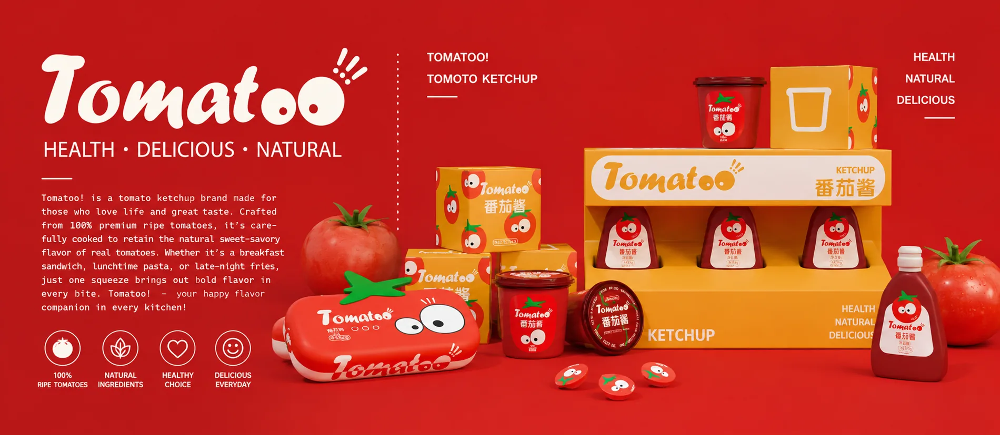
Tomatoo!以趣味 IP 重构番茄酱视觉语言，用天然食材打造国民餐桌的治愈风味。
本项目以年轻消费群体为目标用户，打造了一个兼具趣味性与健康理念的番茄酱品牌。品牌视觉采用高饱和度的番茄红与活力橙为主色调，搭配拟人化番茄 IP 形象，传递出轻松、治愈的产品调性。包装设计融合了便携瓶装、盒装与场景化陈列方案，兼顾日常使用与陈列展示需求。品牌以 “100% 熟成番茄、天然无添加” 为核心卖点，旨在打造一个既健康美味，又能为日常餐桌带来趣味与活力的国民番茄酱品牌。
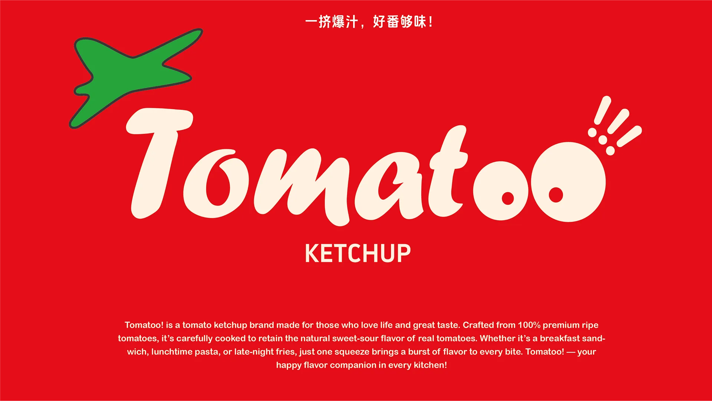
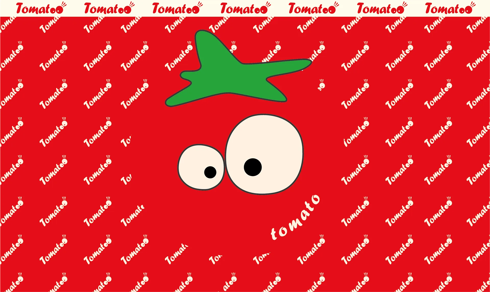
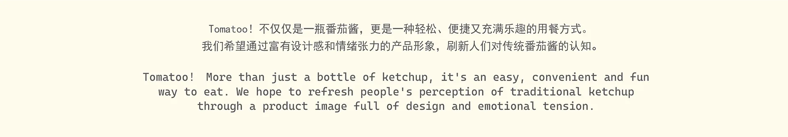
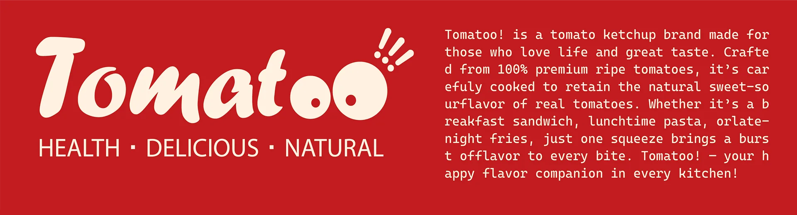
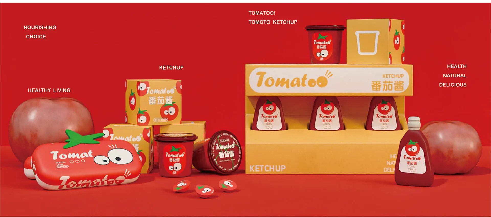
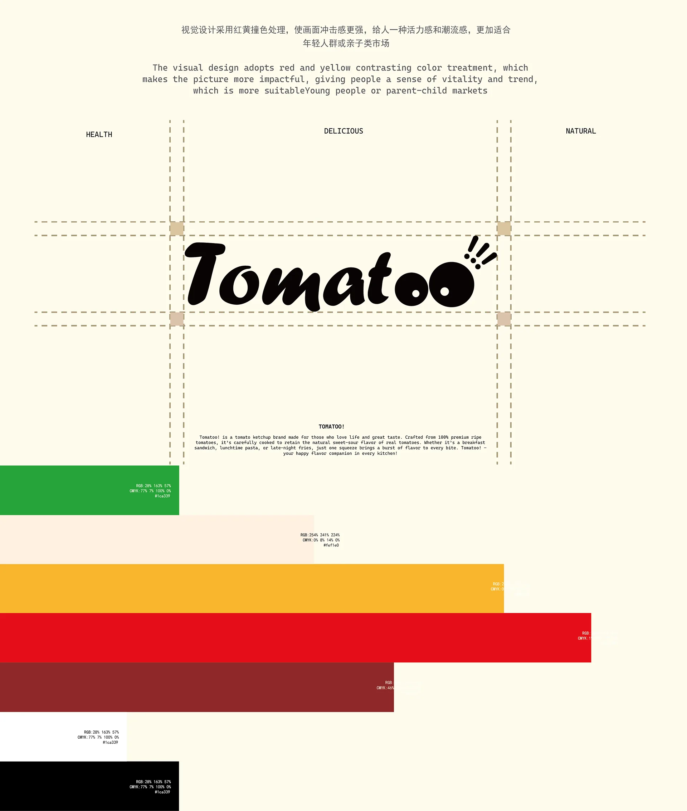
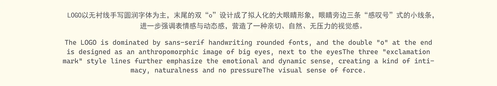
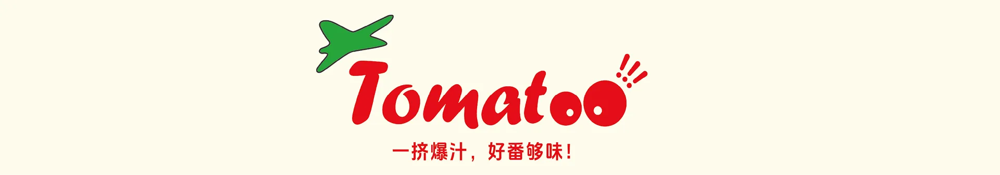
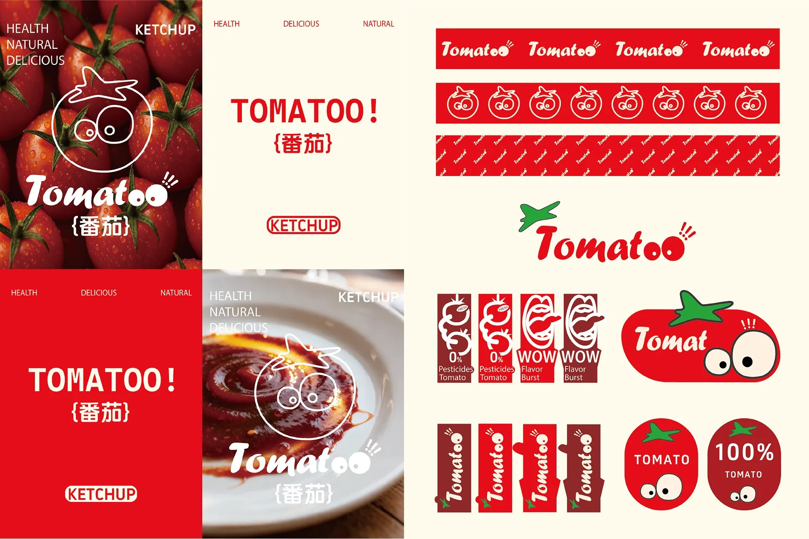
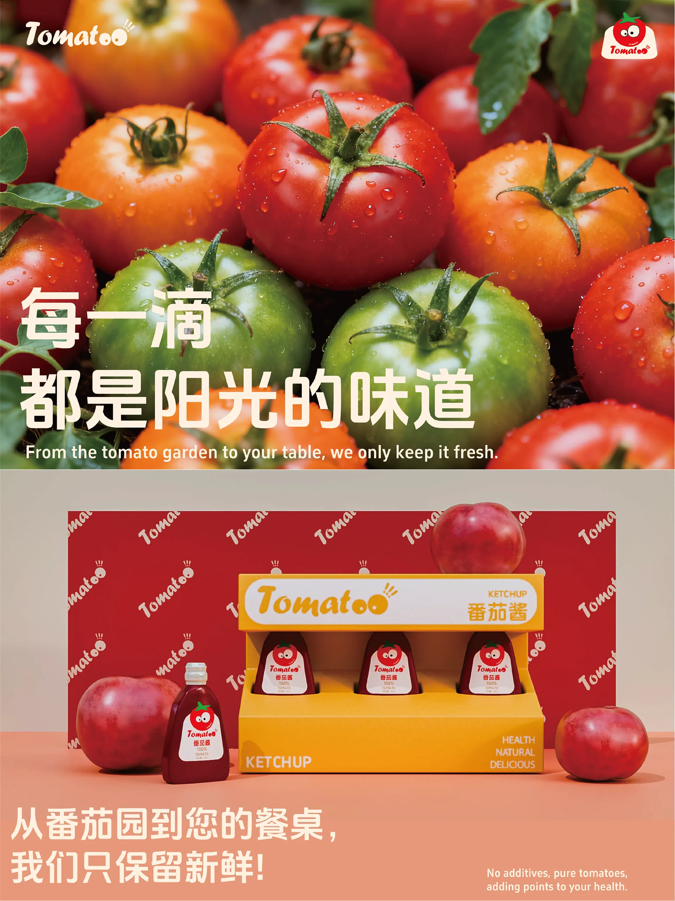
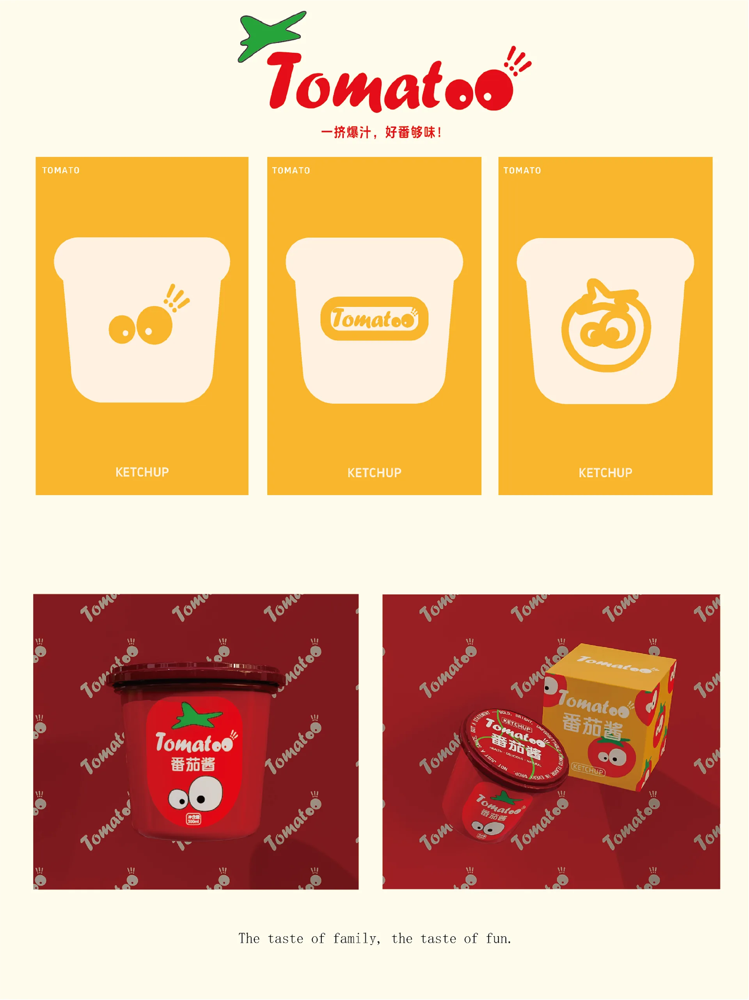
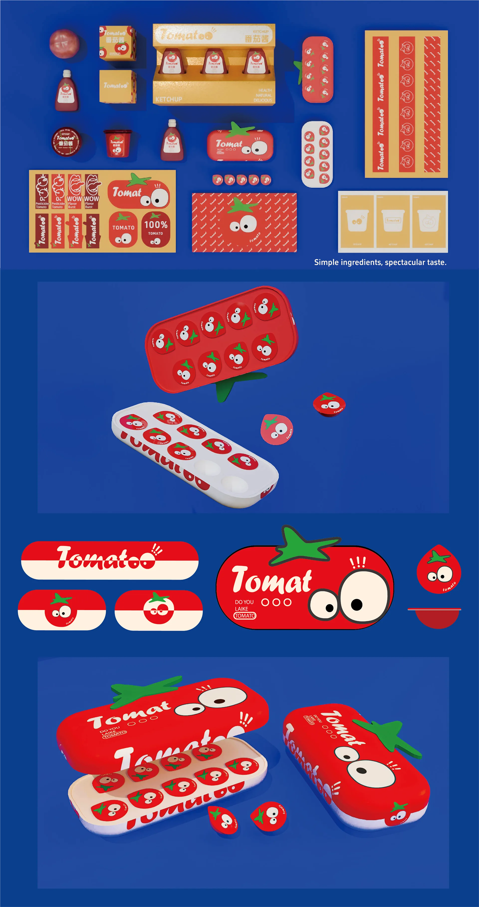
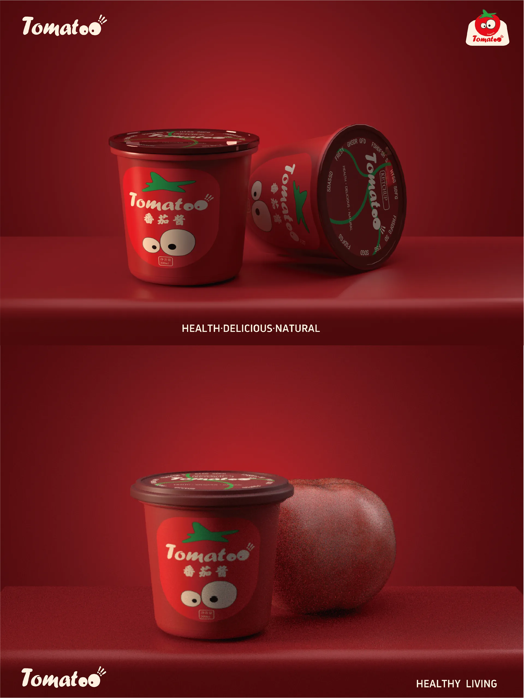
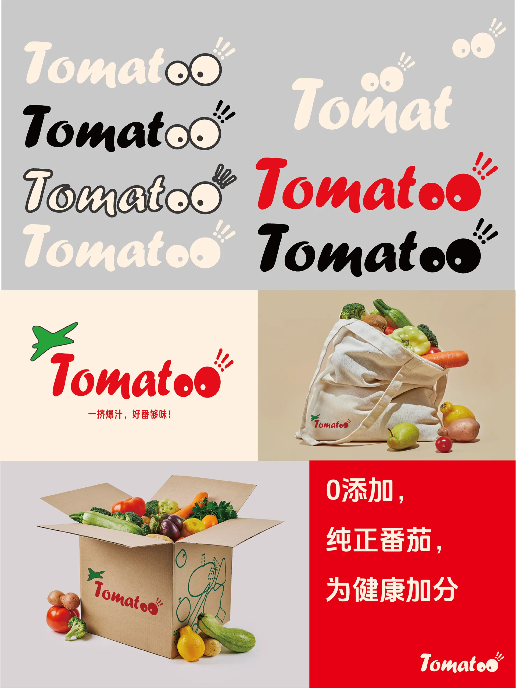